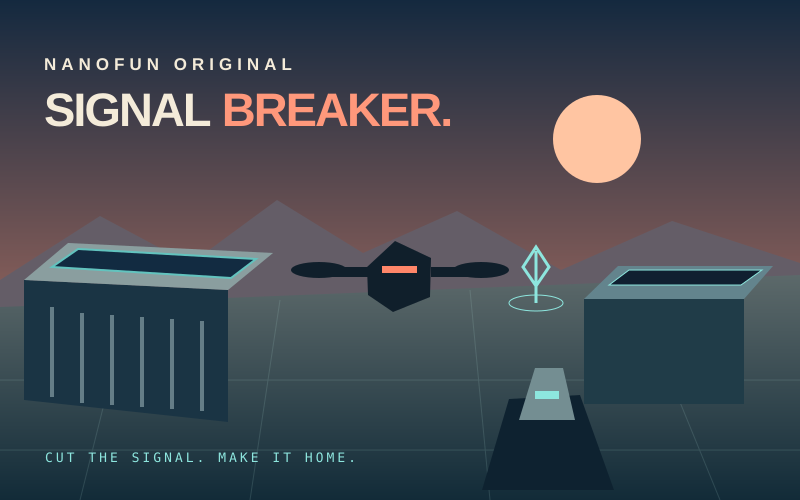

Signal Breaker
The desert is quiet. The machines aren’t. Explore an original twilight solar outpost, disable three relay stations and return to the green extraction pad. Drone and crawler robots protect the site; there are no human targets or blood effects.
Open the arcade & choose Signal Breaker →

Your mission
- Find the three cyan relay stations. The waypoint points toward the nearest active relay, and the radar shows relay locations.
- Move close to each relay and hold E or the phone’s Link button for a short channel. Keep within range until its signal shuts down. A completed relay restores up to 18 suit integrity, capped at 100.
- After all three relays are offline, return to the green starting pad to extract. Shutting down the relays alone does not finish the mission.
Desktop controls
Use WASD or the arrow keys to move. Move the mouse to aim and hold the left mouse button to fire. R recharges the 24-shot magazine; reserve energy is unlimited, but recharging takes time. Shift sprints while stamina lasts. Hold E beside a relay to disconnect it.
Click Enter Sector or Resume to capture the mouse. Escape releases the mouse and pauses. Mouse capture requires a compatible browser and an explicit click; use a recent Chrome, Safari or Firefox browser with WebGL enabled.
Phone controls
The left thumb joystick moves your character. Drag the right aiming area to look around, then hold Fire to shoot. Use Reload to recharge and hold Link beside a relay. You can move and aim with separate fingers. Landscape gives you more room, but portrait is also supported. Leaving the page or switching apps pauses the mission.
Choose your approach
Use solid cover
Outpost buildings block both shots and movement. Break a drone’s line of sight and use the breathing room to reload. Walk around obstacles; shooting through them will not damage a robot behind them.
Keep moving
Flying drones fire at range. Ground crawlers must close the distance. Radar marks nearby active enemies in coral; cleared robots disappear. Sprint can create space, then stamina recovers when you slow down.
Explorer or Standard
Explorer reduces incoming damage. Both modes have the same three-relay and extraction objectives. A new mission begins with 100 suit integrity and a full magazine. Reaching zero integrity ends the current mission.
Coins, pause & privacy
Opening the cabinet is free. Starting or restarting a mission uses one coin through the existing server wallet; one coin covers all three relays and extraction. Pausing and resuming the same open mission are free. Closing the cabinet or refreshing the page discards the current mission. New guests start with 5 free coins; verified email accounts can claim 10 free coins once per Los Angeles day. Active VIP access follows the same website membership rules.
Coins have no cash value. Optional paid products are explained in billing help. Rewarded ads remain unavailable until approved and enabled. The game adds no advertising, tracking, external fonts or login service. The site wallet handles accounts separately.
Original game & credits
Signal Breaker is an original NanoFun implementation of a compact first-person mission. Its code, solar-outpost layout, procedural models, interface and synthesized audio were created for NanoFun. It is not an official Saltline release, and does not contain source or assets from the user-supplied Saltline archive.
Rendering uses locally bundled Three.js 0.160.1 under its MIT license. No extra game files are fetched from a third-party CDN.
Questions? superpowergames.us@gmail.com. Do not send passwords or payment-card data.